FixedShape2


SignalArrow
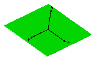


Package Visualizers contains components to visualize 3-dimensional shapes. These components are the basis for the animation features of the MultiBody library.
| FixedShape FixedShape2 |
Visualizing an elementary shape with dynamically varying shape attributes.
FixedShape has one connector frame_a, whereas FixedShape2 has additionally
a frame_b for easier connection to further visual objects.
The following shape types are supported:
|
| FixedFrame | Visualizing a coordinate system including axes labels with fixed sizes:
|
| FixedArrow, SignalArrow |
Visualizing an arrow. Model "FixedArrow" provides
a fixed sized arrow, model "SignalArrow" provides
an arrow with dynamically varying length that is defined
by an input signal vector: |
| Ground | Visualizing the x-y plane by a box: 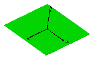 |
| Torus | Visualizing a torus:
|
| VoluminousWheel | Visualizing a wheel:
|
| PipeWithScalarField | Visualizing a pipe with a scalar field represented by a color coding:
|
| Advanced | Package that contains components to visualize 3-dimensional shapes where all parts of the shape can vary dynamically. Basic knowledge of Modelica is needed in order to utilize the components of this package. |
The colors of the visualization components are declared with the predefined type MultiBody.Types.Color. This is a vector with 3 elements, {r, g, b}, and specifies the color of the shape. {r,g,b} are the "red", "green" and "blue" color parts. Note, r g, b are given as Integer[3] in the ranges 0 .. 255, respectively.
Extends from Modelica.Icons.Package (Icon for standard packages).
| Name | Description |
|---|---|
| Visualizing an elementary shape with dynamically varying shape attributes (has one frame connector) | |
| 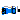 FixedShape2 | Visualizing an elementary shape with dynamically varying shape attributes (has two frame connectors) |
| 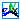 FixedFrame | Visualizing a coordinate system including axes labels (visualization data may vary dynamically) |
| Visualizing an arrow with dynamically varying size in frame_a | |
| 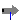 SignalArrow | Visualizing an arrow with dynamically varying size in frame_a based on input signal |
| 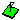 Ground | Visualizing the ground (box in z=0) |
| 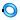 Torus | Visualizing a torus |
| 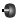 VoluminousWheel | Visualizing a voluminous wheel |
| PipeWithScalarField | Visualizing a pipe with scalar field quantities along the pipe axis |
| Library of functions operating on color | |
| Visualizers that require basic knowledge about Modelica in order to use them | |
| Visualizers that will be replaced by improved versions in the future (don't use them) |

Model FixedShape defines a visual shape that is
shown at the location of its frame_a.
All describing data such as size and color can vary dynamically by
providing appropriate expressions in the input fields of the
parameter menu. The only exception is parameter shapeType
that cannot be changed during simulation.
The following shapes are currently supported via
parameter shapeType (e.g., shapeType="box"):

The dark blue arrows in the figure above are directed along
variable lengthDirection. The light blue arrows are directed
along variable widthDirection. The coordinate systems
in the figure represent frame_a of the FixedShape component.
Additionally external shapes are specified as DXF-files (only 3-dim.Face is supported). External shapes must be named "1", "2" etc.. The corresponding definitions should be in files "1.dxf", "2.dxf" etc.Since the DXF-files contain color and dimensions for the individual faces, the corresponding information in the model is currently ignored. The DXF-files must be found in the current directory.
The sizes of any of the above components are specified by the length, width and height variables. Via variable extra additional data can be defined:
| shapeType | Meaning of parameter extra |
|---|---|
| "cylinder" | if extra > 0, a black line is included in the cylinder to show the rotation of it. |
| "cone" | extra = diameter-left-side / diameter-right-side, i.e., extra = 1: cylinder extra = 0: "real" cone. |
| "pipe" | extra = outer-diameter / inner-diameter, i.e, extra = 1: cylinder that is completely hollow extra = 0: cylinder without a hole. |
| "gearwheel" | extra is the number of teeth of the (external) gear. If extra < 0, an internal gear is visualized with |extra| teeth. The axis of the gearwheel is along "lengthDirection", and usually: width = height = 2*radiusOfGearWheel. |
| "spring" | extra is the number of windings of the spring. Additionally, "height" is not the "height" but 2*coil-width. |
Parameter color is a vector with 3 elements, {r, g, b}, and specifies the color of the shape. {r,g,b} are the "red", "green" and "blue" color parts. Note, r g, b are given as Integer[3] in the ranges 0 .. 255, respectively. The predefined type MultiBody.Types.Color contains a temporary menu definition of the colors used in the MultiBody library (this will be replaced by a color editor).
Extends from Modelica.Mechanics.MultiBody.Interfaces.PartialVisualizer (Base model for visualizers (has a frame_a on the left side + outer world + assert to guarantee that the component is connected)).
| Type | Name | Default | Description |
|---|---|---|---|
| Boolean | animation | true | = true, if animation shall be enabled |
| if animation = true | |||
| ShapeType | shapeType | "box" | Type of shape |
| Position | r_shape[3] | {0,0,0} | Vector from frame_a to shape origin, resolved in frame_a [m] |
| Axis | lengthDirection | {1,0,0} | Vector in length direction of shape, resolved in frame_a [1] |
| Axis | widthDirection | {0,1,0} | Vector in width direction of shape, resolved in frame_a [1] |
| Distance | length | Length of shape [m] | |
| Distance | width | Width of shape [m] | |
| Distance | height | Height of shape [m] | |
| Color | color | {0,128,255} | Color of shape |
| ShapeExtra | extra | 0.0 | Additional data for cylinder, cone, pipe, gearwheel and spring |
| SpecularCoefficient | specularCoefficient | world.defaultSpecularCoeffic... | Reflection of ambient light (= 0: light is completely absorbed) |
| Type | Name | Description |
|---|---|---|
| Frame_a | frame_a | Coordinate system in which visualization data is resolved |
model FixedShape
"Visualizing an elementary shape with dynamically varying shape attributes (has one frame connector)"
import SI = Modelica.SIunits;
import Modelica.Mechanics.MultiBody.Types;
extends Modelica.Mechanics.MultiBody.Interfaces.PartialVisualizer;
parameter Boolean animation=true "= true, if animation shall be enabled";
parameter Types.ShapeType shapeType="box" "Type of shape";
input SI.Position r_shape[3]={0,0,0}
"Vector from frame_a to shape origin, resolved in frame_a";
input Types.Axis lengthDirection={1,0,0}
"Vector in length direction of shape, resolved in frame_a";
input Types.Axis widthDirection={0,1,0}
"Vector in width direction of shape, resolved in frame_a";
input SI.Distance length(start=1) "Length of shape";
input SI.Distance width(start=0.1) "Width of shape";
input SI.Distance height(start=0.1) "Height of shape";
input Modelica.Mechanics.MultiBody.Types.Color color={0,128,255}
"Color of shape";
input Types.ShapeExtra extra=0.0
"Additional data for cylinder, cone, pipe, gearwheel and spring";
input Types.SpecularCoefficient specularCoefficient = world.defaultSpecularCoefficient
"Reflection of ambient light (= 0: light is completely absorbed)";
protected
Advanced.Shape vis(
shapeType=shapeType,
r_shape=r_shape,
lengthDirection=lengthDirection,
widthDirection=widthDirection,
length=length,
width=width,
height=height,
color=color,
extra=extra,
specularCoefficient=specularCoefficient,
r=frame_a.r_0,
R=frame_a.R) if world.enableAnimation and animation;
equation
// No forces and torques
frame_a.f = zeros(3);
frame_a.t = zeros(3);
end FixedShape;

Model FixedShape2 defines a visual shape that is
shown at the location of its frame_a. This model is identical
to FixedShape with the only difference that an
additional frame_b is present which is parallel to frame_a.
This makes it more convenient to connect several visual
shapes together when building up more complex visual
objects. All describing data such as size and color can vary dynamically by
providing appropriate expressions in the input fields of the
parameter menu. The only exception is parameter shapeType
that cannot be changed during simulation.
The following shapes are currently supported via
parameter shapeType (e.g., shapeType="box"):
The dark blue arrows in the figure above are directed along
variable lengthDirection. The light blue arrows are directed
along variable widthDirection. The coordinate systems
in the figure represent frame_a of the FixedShape component.
Additionally external shapes are specified as DXF-files (only 3-dim.Face is supported). External shapes must be named "1", "2" etc.. The corresponding definitions should be in files "1.dxf", "2.dxf" etc.Since the DXF-files contain color and dimensions for the individual faces, the corresponding information in the model is currently ignored. The DXF-files must be found in the current directory.
The sizes of any of the above components are specified by the length, width and height variables. Via variable extra additional data can be defined:
| shapeType | Meaning of parameter extra |
|---|---|
| "cylinder" | if extra > 0, a black line is included in the cylinder to show the rotation of it. |
| "cone" | extra = diameter-left-side / diameter-right-side, i.e., extra = 1: cylinder extra = 0: "real" cone. |
| "pipe" | extra = outer-diameter / inner-diameter, i.e, extra = 1: cylinder that is completely hollow extra = 0: cylinder without a hole. |
| "gearwheel" | extra is the number of teeth of the (external) gear. If extra < 0, an internal gear is visualized with |extra| teeth. The axis of the gearwheel is along "lengthDirection", and usually: width = height = 2*radiusOfGearWheel. |
| "spring" | extra is the number of windings of the spring. Additionally, "height" is not the "height" but 2*coil-width. |
Parameter color is a vector with 3 elements, {r, g, b}, and specifies the color of the shape. {r,g,b} are the "red", "green" and "blue" color parts. Note, r g, b are given as Integer[3] in the ranges 0 .. 255, respectively. The predefined type MultiBody.Types.Color contains a temporary menu definition of the colors used in the MultiBody library (this will be replaced by a color editor).
In the following figure the relationships between frame_a and frame_b are shown. The origin of frame_b with respect to frame_a is specified via parameter vector r.

| Type | Name | Default | Description |
|---|---|---|---|
| Boolean | animation | true | = true, if animation shall be enabled |
| if animation = true | |||
| ShapeType | shapeType | "box" | Type of shape |
| Position | r_shape[3] | {0,0,0} | Vector from frame_a to shape origin, resolved in frame_a [m] |
| Axis | lengthDirection | r - r_shape | Vector in length direction of shape, resolved in frame_a [1] |
| Axis | widthDirection | {0,1,0} | Vector in width direction of shape, resolved in frame_a [1] |
| Length | length | Modelica.Math.Vectors.length... | Length of shape [m] |
| Distance | width | 0.1 | Width of shape [m] |
| Distance | height | width | Height of shape [m] |
| ShapeExtra | extra | 0.0 | Additional data for cylinder, cone, pipe, gearwheel and spring |
| Color | color | {0,128,255} | Color of shape |
| SpecularCoefficient | specularCoefficient | world.defaultSpecularCoeffic... | Reflection of ambient light (= 0: light is completely absorbed) |
| Type | Name | Description |
|---|---|---|
| Frame_a | frame_a | Coordinate system a (all shape definition vectors are resolved in this frame) |
| Frame_b | frame_b | Coordinate system b |
model FixedShape2 "Visualizing an elementary shape with dynamically varying shape attributes (has two frame connectors)" import SI = Modelica.SIunits; import Modelica.Mechanics.MultiBody.Frames; import Modelica.Mechanics.MultiBody.Types;Interfaces.Frame_a frame_a "Coordinate system a (all shape definition vectors are resolved in this frame)"; Interfaces.Frame_b frame_b "Coordinate system b"; parameter Boolean animation=true "= true, if animation shall be enabled"; parameter Types.ShapeType shapeType="box" "Type of shape"; input SI.Position r[3]={1,0,0} "Vector from frame_a to frame_b resolved in frame_a"; input SI.Position r_shape[3]={0,0,0} "Vector from frame_a to shape origin, resolved in frame_a"; input Types.Axis lengthDirection=r - r_shape "Vector in length direction of shape, resolved in frame_a"; input Types.Axis widthDirection={0,1,0} "Vector in width direction of shape, resolved in frame_a"; input SI.Length length=Modelica.Math.Vectors.length( r - r_shape) "Length of shape"; input SI.Distance width=0.1 "Width of shape"; input SI.Distance height=width "Height of shape"; input Types.ShapeExtra extra=0.0 "Additional data for cylinder, cone, pipe, gearwheel and spring"; input Types.Color color={0,128,255} "Color of shape"; input Types.SpecularCoefficient specularCoefficient = world.defaultSpecularCoefficient "Reflection of ambient light (= 0: light is completely absorbed)"; protected outer MultiBody.World world; Advanced.Shape shape( shapeType=shapeType, r_shape=r_shape, lengthDirection=lengthDirection, widthDirection=widthDirection, length=length, width=width, height=height, extra=extra, color=color, specularCoefficient = specularCoefficient, r=frame_a.r_0, R=frame_a.R) if world.enableAnimation and animation; equation Connections.branch(frame_a.R, frame_b.R); assert(cardinality(frame_a) > 0 or cardinality(frame_b) > 0, "Neither connector frame_a nor frame_b of MultiBody.Visualizers.FixedShape2 object is connected"); frame_b.r_0 = frame_a.r_0 + Frames.resolve1(frame_a.R, r); frame_b.R = frame_a.R; /* Force and torque balance */ zeros(3) = frame_a.f + frame_b.f; zeros(3) = frame_a.t + frame_b.t + cross(r, frame_b.f);end FixedShape2;

Model FixedFrame visualizes the three axes of
its coordinate system frame_a together with appropriate axes
labels. A typical example is shown in the following figure:

The sizes of the axes, the axes colors and the specular coefficient (= reflection factor for ambient light) can vary dynamically by providing appropriate expressions in the input fields of the parameter menu.
Extends from Modelica.Mechanics.MultiBody.Interfaces.PartialVisualizer (Base model for visualizers (has a frame_a on the left side + outer world + assert to guarantee that the component is connected)).
| Type | Name | Default | Description |
|---|---|---|---|
| Boolean | animation | true | = true, if animation shall be enabled |
| if animation = true | |||
| Boolean | showLabels | true | = true, if labels shall be shown |
| Distance | length | 0.5 | Length of axes arrows [m] |
| Distance | diameter | length/world.defaultFrameDia... | Diameter of axes arrows [m] |
| Color | color_x | Modelica.Mechanics.MultiBody... | Color of x-arrow |
| Color | color_y | color_x | Color of y-arrow |
| Color | color_z | color_x | Color of z-arrow |
| SpecularCoefficient | specularCoefficient | world.defaultSpecularCoeffic... | Reflection of ambient light (= 0: light is completely absorbed) |
| Type | Name | Description |
|---|---|---|
| Frame_a | frame_a | Coordinate system in which visualization data is resolved |
model FixedFrame
"Visualizing a coordinate system including axes labels (visualization data may vary dynamically)"
import SI = Modelica.SIunits;
import Modelica.Mechanics.MultiBody.Types;
extends Modelica.Mechanics.MultiBody.Interfaces.PartialVisualizer;
parameter Boolean animation=true "= true, if animation shall be enabled";
parameter Boolean showLabels=true "= true, if labels shall be shown";
input SI.Distance length=0.5 "Length of axes arrows";
input SI.Distance diameter=length/world.defaultFrameDiameterFraction
"Diameter of axes arrows";
input Types.Color color_x=Modelica.Mechanics.MultiBody.Types.Defaults.
FrameColor "Color of x-arrow";
input Types.Color color_y=color_x "Color of y-arrow";
input Types.Color color_z=color_x "Color of z-arrow";
input Types.SpecularCoefficient specularCoefficient = world.defaultSpecularCoefficient
"Reflection of ambient light (= 0: light is completely absorbed)";
protected
parameter Boolean animation2 = world.enableAnimation and animation;
parameter Boolean showLabels2= world.enableAnimation and animation and showLabels;
// Parameters to define axes
SI.Length headLength=min(length, diameter*Types.Defaults.FrameHeadLengthFraction);
SI.Length headWidth=diameter*Types.Defaults.FrameHeadWidthFraction;
SI.Length lineLength=max(0, length - headLength);
SI.Length lineWidth=diameter;
// Parameters to define axes labels
SI.Length scaledLabel=Modelica.Mechanics.MultiBody.Types.Defaults.FrameLabelHeightFraction*diameter;
SI.Length labelStart=1.05*length;
// x-axis
Visualizers.Advanced.Shape x_arrowLine(
shapeType="cylinder",
length=lineLength,
width=lineWidth,
height=lineWidth,
lengthDirection={1,0,0},
widthDirection={0,1,0},
color=color_x,
specularCoefficient=specularCoefficient,
r=frame_a.r_0,
R=frame_a.R) if animation2;
Visualizers.Advanced.Shape x_arrowHead(
shapeType="cone",
length=headLength,
width=headWidth,
height=headWidth,
lengthDirection={1,0,0},
widthDirection={0,1,0},
color=color_x,
specularCoefficient=specularCoefficient,
r=frame_a.r_0 + Frames.resolve1(frame_a.R, {lineLength,0,0}),
R=frame_a.R) if animation2;
Visualizers.Internal.Lines x_label(
lines=scaledLabel*{[0, 0; 1, 1],[0, 1; 1, 0]},
diameter=diameter,
color=color_x,
specularCoefficient=specularCoefficient,
r_lines={labelStart,0,0},
n_x={1,0,0},
n_y={0,1,0},
r=frame_a.r_0,
R=frame_a.R) if showLabels2;
// y-axis
Visualizers.Advanced.Shape y_arrowLine(
shapeType="cylinder",
length=lineLength,
width=lineWidth,
height=lineWidth,
lengthDirection={0,1,0},
widthDirection={1,0,0},
color=color_y,
specularCoefficient=specularCoefficient,
r=frame_a.r_0,
R=frame_a.R) if animation2;
Visualizers.Advanced.Shape y_arrowHead(
shapeType="cone",
length=headLength,
width=headWidth,
height=headWidth,
lengthDirection={0,1,0},
widthDirection={1,0,0},
color=color_y,
specularCoefficient=specularCoefficient,
r=frame_a.r_0 + Frames.resolve1(frame_a.R, {0,lineLength,0}),
R=frame_a.R) if animation2;
Visualizers.Internal.Lines y_label(
lines=scaledLabel*{[0, 0; 1, 1.5],[0, 1.5; 0.5, 0.75]},
diameter=diameter,
color=color_y,
specularCoefficient=specularCoefficient,
r_lines={0,labelStart,0},
n_x={0,1,0},
n_y={-1,0,0},
r=frame_a.r_0,
R=frame_a.R) if showLabels2;
// z-axis
Visualizers.Advanced.Shape z_arrowLine(
shapeType="cylinder",
length=lineLength,
width=lineWidth,
height=lineWidth,
lengthDirection={0,0,1},
widthDirection={0,1,0},
color=color_z,
specularCoefficient=specularCoefficient,
r=frame_a.r_0,
R=frame_a.R) if animation2;
Visualizers.Advanced.Shape z_arrowHead(
shapeType="cone",
length=headLength,
width=headWidth,
height=headWidth,
lengthDirection={0,0,1},
widthDirection={0,1,0},
color=color_z,
specularCoefficient=specularCoefficient,
r=frame_a.r_0 + Frames.resolve1(frame_a.R, {0,0,lineLength}),
R=frame_a.R) if animation2;
Visualizers.Internal.Lines z_label(
lines=scaledLabel*{[0, 0; 1, 0],[0, 1; 1, 1],[0, 1; 1, 0]},
diameter=diameter,
color=color_z,
specularCoefficient=specularCoefficient,
r_lines={0,0,labelStart},
n_x={0,0,1},
n_y={0,1,0},
r=frame_a.r_0,
R=frame_a.R) if showLabels2;
equation
frame_a.f = zeros(3);
frame_a.t = zeros(3);
end FixedFrame;
Model FixedArrow defines an arrow that is
shown at the location of its frame_a.
The direction of the arrow specified with vector n is with respect to frame_a, i.e., the local frame to which the arrow component is attached. The direction and length of the arrow, its diameter and color can vary dynamically by providing appropriate expressions in the input fields of the parameter menu.
Extends from Modelica.Mechanics.MultiBody.Interfaces.PartialVisualizer (Base model for visualizers (has a frame_a on the left side + outer world + assert to guarantee that the component is connected)).
| Type | Name | Default | Description |
|---|---|---|---|
| Boolean | animation | true | = true, if animation shall be enabled |
| if animation = true | |||
| Position | r_tail[3] | {0,0,0} | Vector from frame_a to arrow tail, resolved in frame_a [m] |
| Axis | n | {1,0,0} | Vector in arrow direction, resolved in frame_a [1] |
| Length | length | 0.1 | Length of complete arrow [m] |
| Diameter | diameter | world.defaultArrowDiameter | Diameter of arrow line [m] |
| Color | color | {0,0,255} | Color of arrow |
| SpecularCoefficient | specularCoefficient | world.defaultSpecularCoeffic... | Reflection of ambient light (= 0: light is completely absorbed) |
| Type | Name | Description |
|---|---|---|
| Frame_a | frame_a | Coordinate system in which visualization data is resolved |
model FixedArrow
"Visualizing an arrow with dynamically varying size in frame_a"
import SI = Modelica.SIunits;
import Modelica.Mechanics.MultiBody.Types;
extends Modelica.Mechanics.MultiBody.Interfaces.PartialVisualizer;
parameter Boolean animation=true "= true, if animation shall be enabled";
input SI.Position r_tail[3]={0,0,0}
" Vector from frame_a to arrow tail, resolved in frame_a";
input Types.Axis n={1,0,0} " Vector in arrow direction, resolved in frame_a";
input SI.Length length=0.1 " Length of complete arrow";
input SI.Diameter diameter=world.defaultArrowDiameter
" Diameter of arrow line";
input Types.Color color={0,0,255} " Color of arrow";
input Types.SpecularCoefficient specularCoefficient = world.defaultSpecularCoefficient
"Reflection of ambient light (= 0: light is completely absorbed)";
protected
SI.Length headLength=min(length, diameter*Types.Defaults.
ArrowHeadLengthFraction);
SI.Length headWidth=diameter*Types.Defaults.
ArrowHeadWidthFraction;
SI.Length lineLength=max(0, length - headLength);
Visualizers.Advanced.Shape arrowLine(
shapeType="cylinder",
length=lineLength,
width=diameter,
height=diameter,
lengthDirection=n,
widthDirection={0,1,0},
color=color,
specularCoefficient=specularCoefficient,
r_shape=r_tail,
r=frame_a.r_0,
R=frame_a.R) if world.enableAnimation and animation;
Visualizers.Advanced.Shape arrowHead(
shapeType="cone",
length=headLength,
width=headWidth,
height=headWidth,
lengthDirection=n,
widthDirection={0,1,0},
color=color,
specularCoefficient=specularCoefficient,
r_shape=r_tail + Modelica.Math.Vectors.normalize(
n)*lineLength,
r=frame_a.r_0,
R=frame_a.R) if world.enableAnimation and animation;
equation
frame_a.f = zeros(3);
frame_a.t = zeros(3);
end FixedArrow;

Model SignalArrow defines an arrow that is dynamically visualized
at the location where its frame_a is attached. The
position vector from the tail to the head of the arrow,
resolved in frame_a, is defined via the signal vector of
the connector r_head (Real r_head[3]):
The tail of the arrow is defined with parameter r_tail with respect to frame_a (vector from the origin of frame_a to the arrow tail).
Extends from Modelica.Mechanics.MultiBody.Interfaces.PartialVisualizer (Base model for visualizers (has a frame_a on the left side + outer world + assert to guarantee that the component is connected)).
| Type | Name | Default | Description |
|---|---|---|---|
| Boolean | animation | true | = true, if animation shall be enabled |
| if animation = true | |||
| Position | r_tail[3] | {0,0,0} | Vector from frame_a to arrow tail, resolved in frame_a [m] |
| Diameter | diameter | world.defaultArrowDiameter | Diameter of arrow line [m] |
| Color | color | {0,0,255} | Color of arrow |
| SpecularCoefficient | specularCoefficient | world.defaultSpecularCoeffic... | Reflection of ambient light (= 0: light is completely absorbed) |
| Type | Name | Description |
|---|---|---|
| Frame_a | frame_a | Coordinate system in which visualization data is resolved |
| input RealInput | r_head[3] | Position vector from origin of frame_a to head of arrow, resolved in frame_a [m] |
model SignalArrow
"Visualizing an arrow with dynamically varying size in frame_a based on input signal"
import SI = Modelica.SIunits;
import Modelica.Mechanics.MultiBody.Types;
extends Modelica.Mechanics.MultiBody.Interfaces.PartialVisualizer;
parameter Boolean animation=true "= true, if animation shall be enabled";
input SI.Position r_tail[3]={0,0,0}
"Vector from frame_a to arrow tail, resolved in frame_a";
input SI.Diameter diameter=world.defaultArrowDiameter
"Diameter of arrow line";
input Modelica.Mechanics.MultiBody.Types.Color color={0,0,255}
"Color of arrow";
input Types.SpecularCoefficient specularCoefficient = world.defaultSpecularCoefficient
"Reflection of ambient light (= 0: light is completely absorbed)";
Modelica.Blocks.Interfaces.RealInput r_head[3](each final quantity="Position", each final
unit = "m")
"Position vector from origin of frame_a to head of arrow, resolved in frame_a";
protected
Visualizers.Advanced.Arrow arrow(
R=frame_a.R,
r=frame_a.r_0,
r_tail=r_tail,
r_head=r_head,
diameter=diameter,
color=color,
specularCoefficient=specularCoefficient) if world.enableAnimation and animation;
equation
frame_a.f = zeros(3);
frame_a.t = zeros(3);
end SignalArrow;
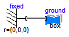
This shape visualizes the x-y plane by a box
| Type | Name | Default | Description |
|---|---|---|---|
| Boolean | animation | true | = true, if animation of ground shall be enabled |
| Position | length | 10 | Length and width of box (center is at x=y=0) [m] |
| Position | height | 0.02 | Height of box (upper surface is at z=0, lower surface is at z=-height) [m] |
| Color | groundColor | {0,255,0} | Color of box |
model Ground "Visualizing the ground (box in z=0)"
parameter Boolean animation=true
"= true, if animation of ground shall be enabled";
parameter Modelica.SIunits.Position length = 10
"Length and width of box (center is at x=y=0)";
parameter Modelica.SIunits.Position height = 0.02
"Height of box (upper surface is at z=0, lower surface is at z=-height)";
parameter Modelica.Mechanics.MultiBody.Types.Color groundColor={0,255,0}
"Color of box";
Modelica.Mechanics.MultiBody.Visualizers.FixedShape ground(
lengthDirection={1,0,0},
widthDirection={0,1,0},
animation=animation,
r_shape={-length/2,0,-height},
length=length,
height=height,
color=groundColor,
width=length);
Modelica.Mechanics.MultiBody.Parts.Fixed fixed;
equation
connect(fixed.frame_b, ground.frame_a);
end Ground;
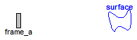
Model Torus visualizes a torus. The center of the torus is located at connector frame_a (visualized by the red coordinate system in the figure below). The left image below shows a torus with ri=0.5 m and ro = 0.2 m. The right images below shows the torus with the additional parameter settings:
opening = 45 degree startAngle = -135 degree stopAngle = 135 degree
Extends from Modelica.Mechanics.MultiBody.Interfaces.PartialVisualizer (Base model for visualizers (has a frame_a on the left side + outer world + assert to guarantee that the component is connected)).
| Type | Name | Default | Description |
|---|---|---|---|
| Boolean | animation | true | = true, if animation shall be enabled |
| Radius | ri | 0.5 | Inner radius of torus [m] |
| Radius | ro | 0.1 | Outer radius of torus (=width/2) [m] |
| Angle | opening | 0 | Opening angle of torus [rad] |
| Angle | startAngle | -3.1415926535898 | Start angle of torus slice [rad] |
| Angle | stopAngle | 3.1415926535898 | End angle of torus slice [rad] |
| Material properties | |||
| Boolean | wireframe | false | = true: 3D model will be displayed without faces |
| RealColor | color | {0,128,255} | Color of surface |
| SpecularCoefficient | specularCoefficient | 0.7 | Reflection of ambient light (= 0: light is completely absorbed) |
| Real | transparency | 0 | Transparency of shape: 0 (= opaque) ... 1 (= fully transparent) |
| Discretization | |||
| Integer | n_ri | 40 | Number of points along ri |
| Integer | n_ro | 20 | Number of points along ro |
| Type | Name | Description |
|---|---|---|
| Frame_a | frame_a | Coordinate system in which visualization data is resolved |
model Torus "Visualizing a torus"
extends Modelica.Mechanics.MultiBody.Interfaces.PartialVisualizer;
parameter Boolean animation=true "= true, if animation shall be enabled";
parameter Modelica.SIunits.Radius ri=0.5 "Inner radius of torus";
parameter Modelica.SIunits.Radius ro=0.1 "Outer radius of torus (=width/2)";
parameter Modelica.SIunits.Angle opening=0 "Opening angle of torus";
parameter Modelica.SIunits.Angle startAngle=-3.1415926535898
"Start angle of torus slice";
parameter Modelica.SIunits.Angle stopAngle=3.1415926535898
"End angle of torus slice";
parameter Boolean wireframe=false
"= true: 3D model will be displayed without faces";
input Modelica.Mechanics.MultiBody.Types.RealColor color={0,128,255}
"Color of surface";
input Types.SpecularCoefficient specularCoefficient = 0.7
"Reflection of ambient light (= 0: light is completely absorbed)";
input Real transparency=0
"Transparency of shape: 0 (= opaque) ... 1 (= fully transparent)";
parameter Integer n_ri=40 "Number of points along ri";
parameter Integer n_ro=20 "Number of points along ro";
protected
Advanced.Surface surface( redeclare function surfaceCharacteristic =
Modelica.Mechanics.MultiBody.Visualizers.Advanced.SurfaceCharacteristics.torus
( ri=ri, ro=ro, opening=opening, startAngle=startAngle, stopAngle=stopAngle),
nu=n_ri,
nv=n_ro,
multiColoredSurface=false,
wireframe=wireframe,
color=color,
specularCoefficient=specularCoefficient,
transparency=transparency,
R=frame_a.R,
r_0=frame_a.r_0) if world.enableAnimation and animation;
equation
// No forces and torques
frame_a.f = zeros(3);
frame_a.t = zeros(3);
end Torus;
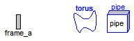
Model VoluminousWheel provides a simple visualization of a tire using a torus and a pipe shape object. The center of the wheel is located at connector frame_a (visualized by the red coordinate system in the figure below).
Extends from Modelica.Mechanics.MultiBody.Interfaces.PartialVisualizer (Base model for visualizers (has a frame_a on the left side + outer world + assert to guarantee that the component is connected)).
| Type | Name | Default | Description |
|---|---|---|---|
| Boolean | animation | true | = true, if animation shall be enabled |
| Radius | rTire | 0.25 | Radius of the tire [m] |
| Radius | rRim | 0.14 | Radius of the rim [m] |
| Radius | width | 0.25 | Width of the tire [m] |
| Radius | rCurvature | 0.30 | Radius of the curvature of the tire [m] |
| Material properties | |||
| RealColor | color | {64,64,64} | Color of tire |
| SpecularCoefficient | specularCoefficient | 0.5 | Reflection of ambient light (= 0: light is completely absorbed) |
| Discretization | |||
| Integer | n_rTire | 40 | Number of points along rTire |
| Integer | n_rCurvature | 20 | Number of points along rCurvature |
| Type | Name | Description |
|---|---|---|
| Frame_a | frame_a | Coordinate system in which visualization data is resolved |
model VoluminousWheel "Visualizing a voluminous wheel"
import SI = Modelica.SIunits;
extends Modelica.Mechanics.MultiBody.Interfaces.PartialVisualizer;
parameter Boolean animation=true "= true, if animation shall be enabled";
parameter SI.Radius rTire=0.25 "Radius of the tire";
parameter SI.Radius rRim= 0.14 "Radius of the rim";
parameter SI.Radius width=0.25 "Width of the tire";
parameter SI.Radius rCurvature=0.30 "Radius of the curvature of the tire";
parameter Modelica.Mechanics.MultiBody.Types.RealColor color={64,64,64}
"Color of tire";
parameter Types.SpecularCoefficient specularCoefficient = 0.5
"Reflection of ambient light (= 0: light is completely absorbed)";
parameter Integer n_rTire=40 "Number of points along rTire";
parameter Integer n_rCurvature=20 "Number of points along rCurvature";
protected
parameter SI.Radius rw = (width/2);
parameter SI.Radius rCurvature2 = if rCurvature > rw then rCurvature else rw;
parameter SI.Radius h = sqrt(1-(rw/rCurvature2)*(rw/rCurvature2))*rCurvature2;
parameter SI.Radius ri = rTire-rCurvature2;
parameter SI.Radius rRim2 = if rRim < 0 then 0 else if rRim > ri+h then ri+h else rRim;
Visualizers.Advanced.Shape pipe(
shapeType="pipe",
color=color,
length= width,
width=2*(ri+h),
height=2*(ri+h),
lengthDirection={0,1,0},
widthDirection={0,0,1},
extra=(rRim2)/(ri+h),
r=frame_a.r_0,
r_shape= -{0,1,0}*(width/2),
R= frame_a.R,
specularCoefficient = specularCoefficient) if world.enableAnimation and animation;
Visualizers.Advanced.Surface torus(redeclare function surfaceCharacteristic
= Modelica.Mechanics.MultiBody.Visualizers.Advanced.SurfaceCharacteristics.torus
( ri=ri,
ro=rCurvature2,
opening=Modelica.Constants.pi - Modelica.Math.asin(rw/rCurvature2)),
nu=n_rTire,
nv=n_rCurvature,
multiColoredSurface=false,
wireframe=false,
color=color,
specularCoefficient=specularCoefficient,
transparency=0,
R=frame_a.R,
r_0=frame_a.r_0) if world.enableAnimation and animation;
equation
// No forces and torques
frame_a.f = zeros(3);
frame_a.t = zeros(3);
end VoluminousWheel;
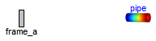
Model PipeWithScalarField visualizes a pipe and a scalar field along the pipe axis. The latter is shown by mapping the scalar field to color values with a color map and utilizing this color at the perimeter associated with the corresponding axis location. Typically the scalar field value is a temperature, but might be also another quantity. Predefined color maps are available from MultiBody.Visualizers.Colors.ColorMaps and can be selected via parameter "colorMap". A color map with the corresponding scalar field values can be exported as vector-graphics in svg-format with function MultiBody.Visualizers.Colors.colorMapToSvg. Connecter frame_a of this component is located in the center of the circle at the left side of the pipe and the pipe axis is oriented along the x-axis of frame_a, see figure below in which frame_a is visualized with a coordinate system:
The color coding is shown in the next figure. It was generated with MultiBody.Visualizers.Colors.colorMapToSvg using the following call:
colorMapToSvg(Modelica.Mechanics.MultiBody.Visualizers.Colors.ColorMap.jet(),
height=50, nScalars=6, T_max=100, caption="Temperature in C");
Extends from Modelica.Mechanics.MultiBody.Interfaces.PartialVisualizer (Base model for visualizers (has a frame_a on the left side + outer world + assert to guarantee that the component is connected)).
| Type | Name | Default | Description |
|---|---|---|---|
| Boolean | animation | true | = true, if animation shall be enabled |
| Radius | rOuter | Outer radius of pipe [m] | |
| Length | length | Length of pipe [m] | |
| Real | xsi[:] | Modelica.Math.Vectors.relNod... | [:] Relative position along the pipe with x[1] = 0, x[end] = 1 |
| Real | T[size(xsi, 1)] | [:] Scalar values at position xsi*length (will be visualized by color) | |
| Real | T_min | Minimum value of T that corresponds to colorMap[1,:] | |
| Real | T_max | Maximum value of T that corresponds to colorMap[end,:] | |
| Color coding | |||
| Integer | n_colors | 64 | Number of colors in the colorMap |
| SpecularCoefficient | specularCoefficient | 0.7 | Reflection of ambient light (= 0: light is completely absorbed) |
| Real | transparency | 0 | Transparency of shape: 0 (= opaque) ... 1 (= fully transparent) |
| Discretization | |||
| Integer | n_rOuter | 30 | Number of points along outer radius |
| Integer | n_length | 20 | Number of points along length |
| Type | Name | Description |
|---|---|---|
| Frame_a | frame_a | Coordinate system in which visualization data is resolved |
model PipeWithScalarField
"Visualizing a pipe with scalar field quantities along the pipe axis"
extends Modelica.Mechanics.MultiBody.Interfaces.PartialVisualizer;
parameter Boolean animation=true "= true, if animation shall be enabled";
parameter Modelica.SIunits.Radius rOuter "Outer radius of pipe";
parameter Modelica.SIunits.Length length "Length of pipe";
parameter Real xsi[:](min=0,max=1)= Modelica.Math.Vectors.relNodePositions(12)
"[:] Relative position along the pipe with x[1] = 0, x[end] = 1";
input Real T[size(xsi,1)]
"[:] Scalar values at position xsi*length (will be visualized by color)";
parameter Real T_min "Minimum value of T that corresponds to colorMap[1,:]";
parameter Real T_max "Maximum value of T that corresponds to colorMap[end,:]";
replaceable function colorMap =
Modelica.Mechanics.MultiBody.Visualizers.Colors.ColorMaps.jet
constrainedby Modelica.Mechanics.MultiBody.Interfaces.partialColorMap
"Function defining the color map";
parameter Integer n_colors=64 "Number of colors in the colorMap";
parameter Types.SpecularCoefficient specularCoefficient = 0.7
"Reflection of ambient light (= 0: light is completely absorbed)";
parameter Real transparency=0
"Transparency of shape: 0 (= opaque) ... 1 (= fully transparent)";
parameter Integer n_rOuter=30 "Number of points along outer radius";
parameter Integer n_length=20 "Number of points along length";
protected
Advanced.PipeWithScalarField pipe(redeclare function colorMap = colorMap,
rOuter=rOuter,
length=length,
xsi=xsi,
T=T,
T_min=T_min,
T_max=T_max,
n_colors=n_colors,
n_rOuter=n_rOuter,
n_length=n_length,
specularCoefficient=specularCoefficient,
transparency=transparency,
R=frame_a.R,
r_0=frame_a.r_0) if world.enableAnimation and animation;
equation
// No forces and torques
frame_a.f = zeros(3);
frame_a.t = zeros(3);
end PipeWithScalarField;